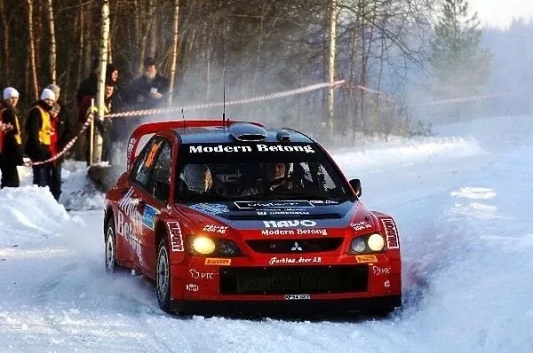
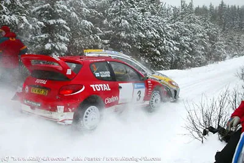
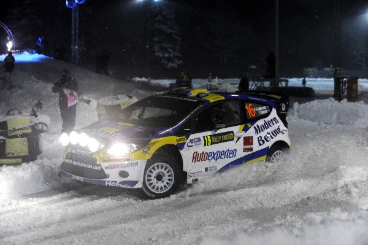
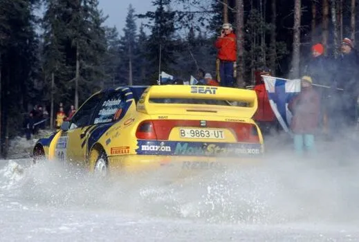
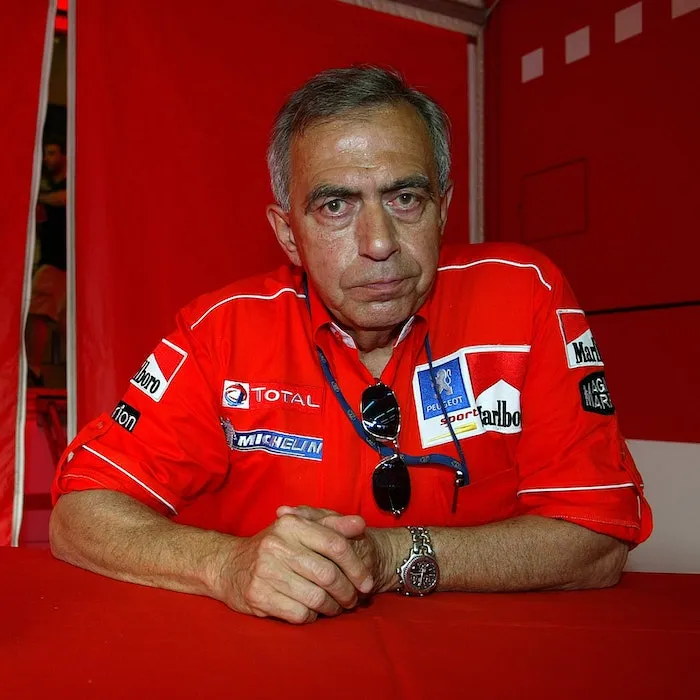

5 Rally Sweden Moments you Forgot!
The next stop in the WRC calendar is Sweden, the only snow rally of the season! Sweden has been part of the calendar in all but 3 seasons, and is a rally with rich history. Understandably, when a rally is synonymous with the WRC like with Sweden, there many moments that are forgotten by even the most hardcore of WRC fans. But fear not, because I am here to remind you of 5 Rally Sweden moments that you might have forgotten about! Without further ado, let's get into the list!
2006 - Gigi and Daniel fight for their maiden podium
2006 was a transitional season for the WRC. With only 2 fully fledged manufacturers in the series (a far cry from the 6 of the previous year) and with Subaru being far too uncompetitive, there were only two drivers who you could realistically expect to consistently win rallies, Marcus Gronholm in the Ford and Sebastien Loeb in the privateer Xsara. Because Subaru's 2006 challenger was so awful, the last place of the podium was often up for grabs for privateers. In Monte already we saw an example of that, with Ford refugee Toni Gardemeister finishing 3rd with a privately entered 307 WRC. In Sweden, the status quo of the season was maintained, with Marcus Gronholm leading the rally, and Sebastien Loeb close behind in 2nd. Gronholm's teammate Mikko Hirvonen was 3rd, but the Finn damaged his Ford Focus after an awkward landing on the Colin's Crest, and retired. That left 3 drivers in the hunt for their first podium, with Gigi Galli, Daniel Carlsson and Mattias Ekstrom, all in privateer cars, seperated by 25s heading to Saturday. That fight soon became a Mitsubishi civil war, as Ekstrom lost touch with the pair and eventually crashed out of the rally on Sunday. Carlsson and Galli interchanged between 3rd and 4th multiple times, with them exchanging positions 5 times in as many stages on Sunday! In such a tight battle something had to give, and what did was Galli's gearbox, with the Italian losing his 4th gear, and relinquishing 3rd to Carlsson. This would be the Swede's first and only podium, and what better place to do it but at home! Gigi would go on to get his first podium later in the year in Argentina.
2003 - Rovanpera and Pykalisto collide

This is a short, but not a particularly sweet one. Juuso Pykalisto was driving his best rally in the WRC, with the Finn ending Friday in 5th! Pykalisto was driving a privateer 206 WRC, and had benefited from his late start position, in the end of Friday he was ahead of big names like Solberg and Martin! But Saturday..., that was a different story. The Finn rolled on the 2nd stage of Saturday. It didn't look that terrible, and Pykalisto tried to get out of the snowbank with the help of some nearby fans. Next into the stage was Harri Rovanpera, who was just half a second behind teammate Richard Burns, the two embroiled in a battle for 3rd. Rovanpera was approaching Pykalisto's spot. The fans were trying to slow him down, but Harri thought they were cheering him on and continued as normal, but after a crest, he saw Pykalisto's car, and he couldn't do anything about it. The two Finns collided and they were both out of the rally. Luckily no one was injured in the accident, which is lucky considering there were spectators in the middle of the stage.
2011 - P.G. Andersson becomes the first driver to lead a rally in the WRC's 1.6L era

For 2011, the WRC switched to 1.6L Turbocharged engines! It was the start of a new era, and there were many faces in WRC machinery ready to tackle the first rally of the season in Sweden. Amongst the privateers was local hero PG Andersson. Andersson at the time was a two time JWRC champion (quite rare to hear that I know) and was trying to get his career back to track. The Swede was a bit screwed after Suzuki left the sport at the end of the 2008 season, and despite showing promise in the SWRC in 2010 and in a one off with a Stobart Ford in Bulgaria, the Swede was without a factory seat or a semi backed programme for 2011 in the WRC. But hey, atleast he could do his home rally in a WRC car! And Andersson went and won the Thursday's SSS in Karlstad to become the first driver to lead a rally in the new spec cars! But that's not all, because PG was showing impressive pace in the Fiesta, also winning SS3. Unfortunately for the Swede, he went off the road on the next stage losing almost 4 minutes. But he fought back, winning a total of 4 stages in the end, and finishing 7th in the end.
1999 - Marcus Gronholm's one off in a Seat

Marcus Gronholm had finally gotten his chance. The big Finn had signed for Peugeot for 1999, and it would be the first time he would be driving for a factory backed team in the WRC full time! Gronholm drove for Toyota for some rounds in 1997 and 1998, which impressed Peugeot, who offered the Finn a drive for 1999, when the 206 WRC would be ready. Peugeot's WRC machine wouldn't come until later in the season though, so Gronholm was free to do some "espionage" lets say on Peugeot's future competitors. Gronholm stepped in to the 2nd Seat for Sweden replacing Pierro Liatti, who lets face it would have been a bit hopeless in the snow. Unfortunately Gronholm's rally only lasted 2 stages, as his Seat's engine expired on the second stage of the rally. The Finn would later also sub in for the injured Freddy Loix in Portugal for Mitsubishi, before starting his programme with Peugeot in Acropolis.
2005 - Corrado Provera's last rally as Peugeot boss

Rally Sweden 2005 was Corrado Provera's last rally in charge of the Peugeot team, after that, the Italian would be going into retirement. Provera helped Peugeot win 3 Constructors Championships and also helped Marcus Gronholm win his two driver's titles. Gronholm wanted to give his parting team boss a farewell gift, and what better gift than win the Rally for him. Gronholm was embroiled in a great fight with Subaru's Petter Solberg, with the pair exchanging the lead multiple times throughout Saturday. The two ended the day 12s apart, and Gronholm vowed to go all out for the rally win on Sunday. But on the second stage of Sunday, the Finn rolled out of the rally, perhaps pushing too much to get his 4th Sweden win. Provera was not impressed with Gronholm's retirement, saying to the cameras that he would have been happy if Gronholm settled for second, because he'd be scoring good points in the driver's championship, and Peugeot would have left Sweden as championship leaders in the Manufacturers. But alas, it wasn't meant to be. A bitter sweet ending for such a succesful partnership.


Comments